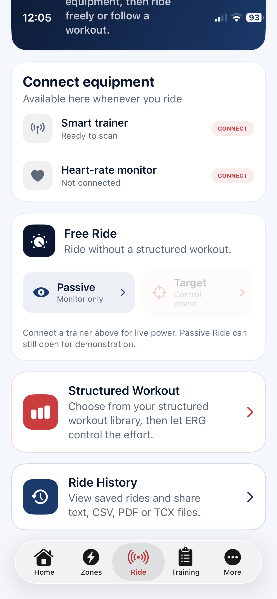

04
Connect
Bring your trainer into the workout.
Connect a compatible Bluetooth smart trainer for live power and automatic resistance control. Add a heart-rate monitor to see how your body responds as the work changes.
BluetoothSmart trainerHeart rateERG or Passive

Simple setup
Connect once, then choose how you want to ride.
The Ride screen keeps equipment and riding choices together. Use a structured workout, ride freely with target control, or select Passive mode to monitor power without the app changing resistance.
Next: Ride
Let the workout take control—or stay in charge yourself.
See how live metrics, ERG targets, interval guidance and the workout graph come together during a ride.